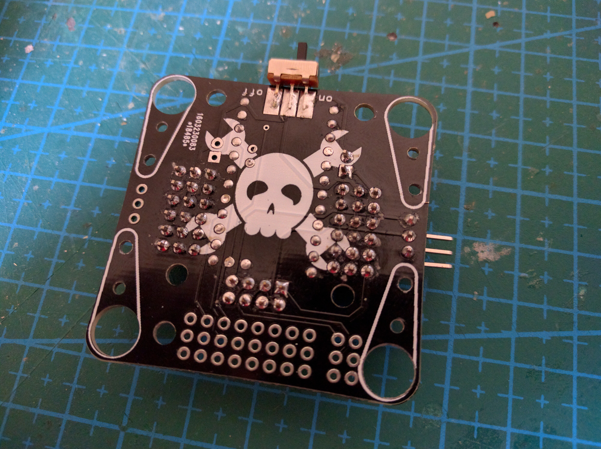
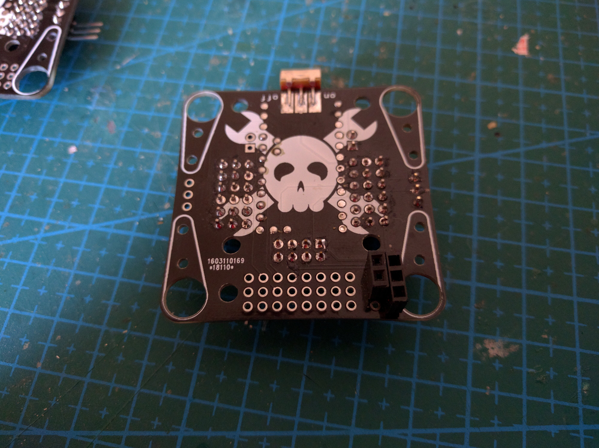
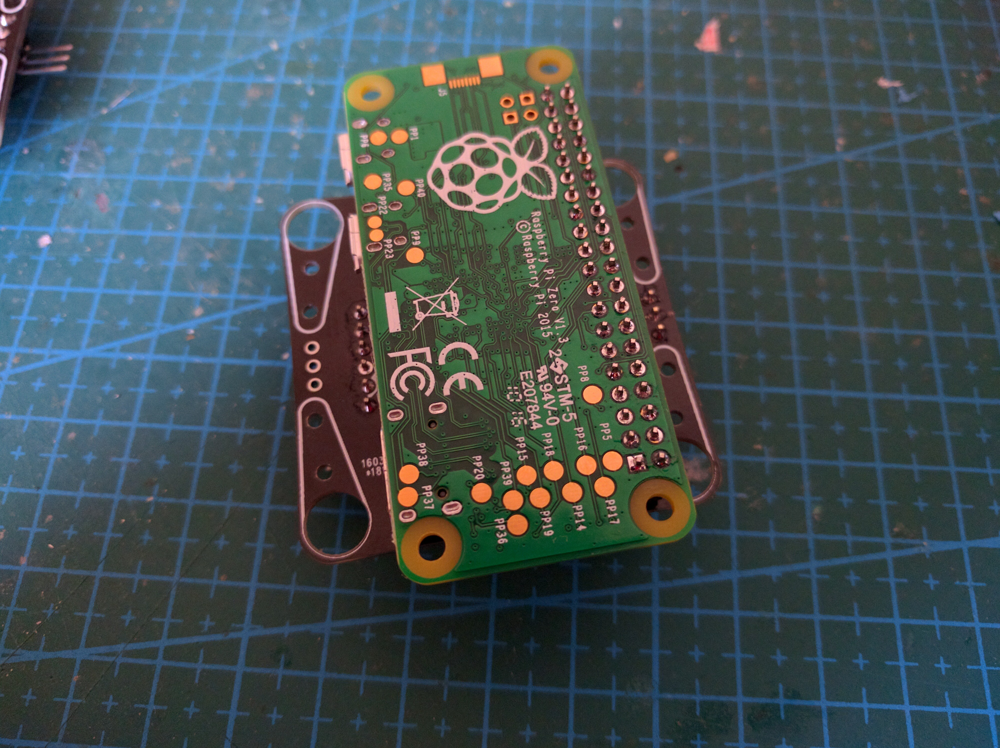
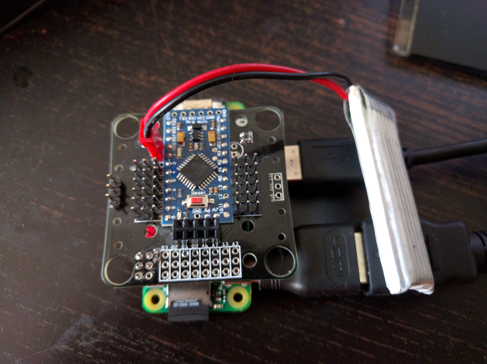

Robot Fusion¶
Published on 2016-11-06 in Tote Zero.
So I never actually made that board from the last log. But remember Tote HaD , those robots that we have built at Hackaday Belgrade? I have spent a considerable amount of time designing that PCB, and it has a couple of Easter eggs in there. On of them is that unpopulated pin header in the lower right corner:
Turns out that you can put a female pin header in there:
And then, instead of plugging that ESP8266 module in the usual socket, you can plug a Raspberry Pi Zero in there:
The power from the LiPo is only between 3.7 and 4.2V, but turns out that this is enough for the pi – its regulator will switch into a low-voltage mode, and everything works:
Next, I will just need to take the MicroPython code I used on the original, and touch it up to run on regular Python on the pi, with the SMBus library for the I²C communication.